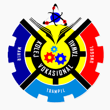
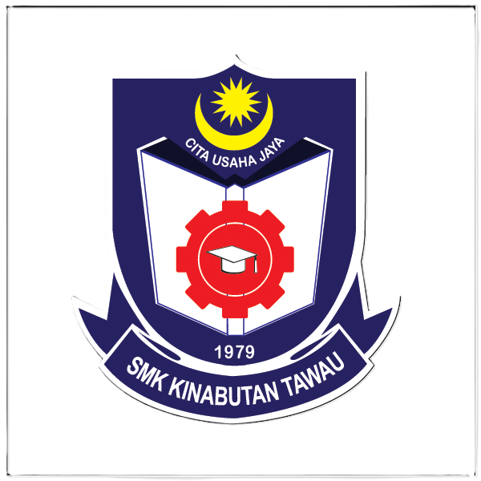

UITM - BACHELOR OF INFORMATION SCIENCE (HONOURS) INFORMATION SYSTEMS MANAGEMENT
2023 - Ongoing
- Database Fundamentals: Introduction to database design, implementation, and management using tools like Microsoft Access.
- Webpage Development: Basics of creating static and dynamic webpages using HTML and CSS.
- Programming Basics: Learned foundational coding concepts in Java and Python, emphasizing problem-solving and logic building.

KOLEJ VOCATIONAL TAWAU - COMPUTER SYSTEM AND NETWORKING
2012 - 2017
- Networking Fundamentals: Learned concepts of LAN/WAN, IP addressing, subnetting, and network security.
- Operating Systems: Gained proficiency in configuring and troubleshooting Windows and Linux-based systems.
- Hardware and Software Maintenance: Acquired skills in assembling, repairing, and maintaining computer systems and peripherals.
- Cisco Networking Academy: Participated in Cisco certification programs to deepen networking knowledge.

SMK KINABUTAN TAWAU
2010 - 2012

SK KAMPUNG TITINGAN TAWAU
2004 - 2009